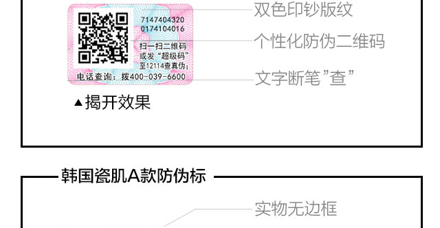
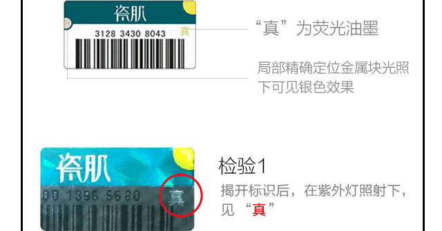
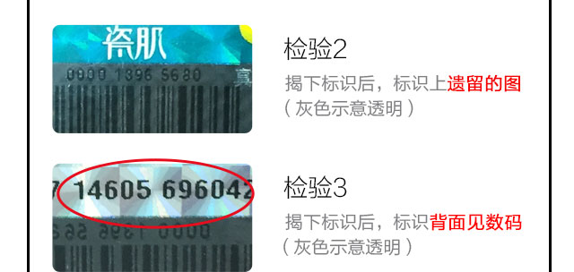
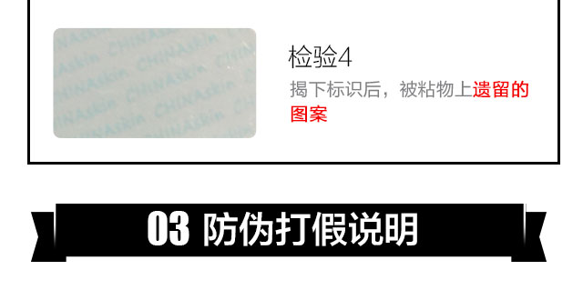
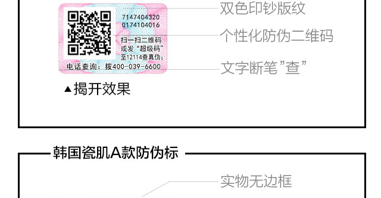
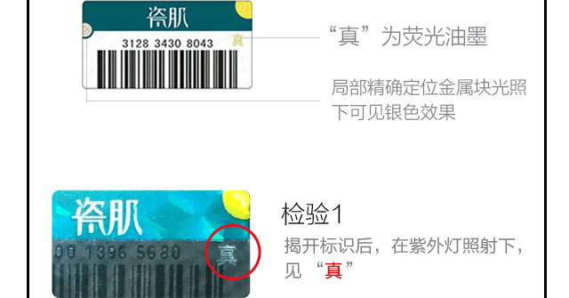
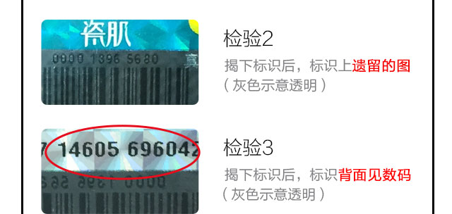
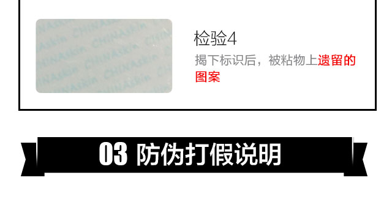

- 1、
“韩国瓷肌”是我公司之注册商标，韩国瓷肌正品上均贴有此商标，无此商标均为假货。
- 2、
www.chinaskin.cn是销售韩国瓷肌产品的唯一官方网站。
- 3、
韩国瓷肌推广网站：
①www.chinaskin.net ②www.chinaskin.org ③www.chinaskin.net.cn - 4、
除了以上官网、推广网站及相关授权渠道外，其他网站销售的韩国瓷肌产品均为假冒伪劣产品。
- 5、
韩国瓷肌产品全国免费订购热线为：400 1022 888
- 6、
韩国瓷肌客服来电号码显示信息查询：请关注【瓷肌Korea】进行查询
- 7、
韩国瓷肌客服微信号查询(字母默认小写)：
请关注【瓷肌Korea】进行查询